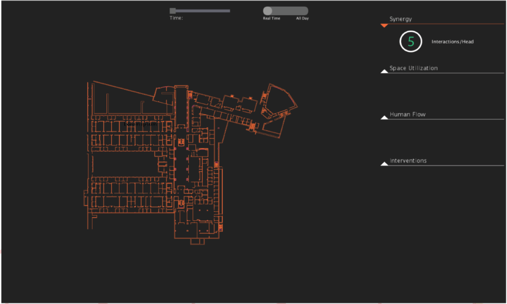
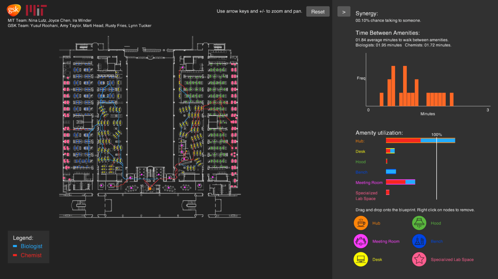
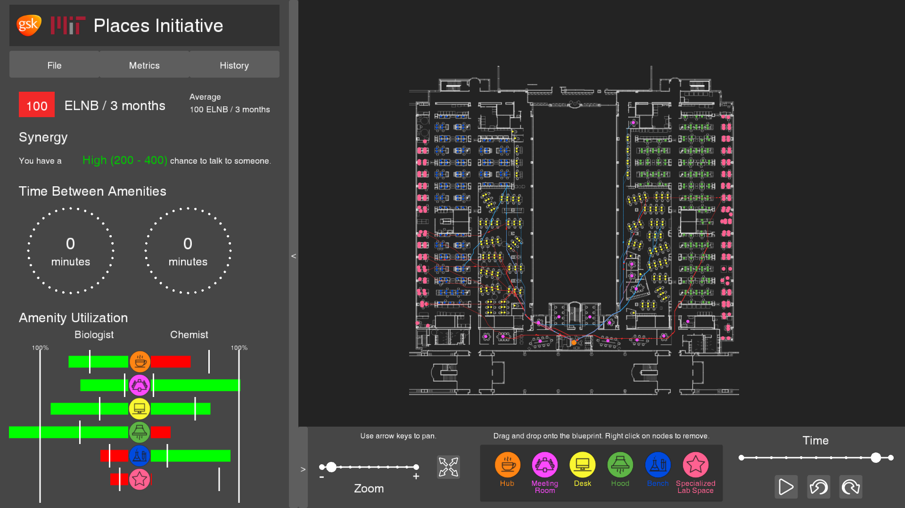
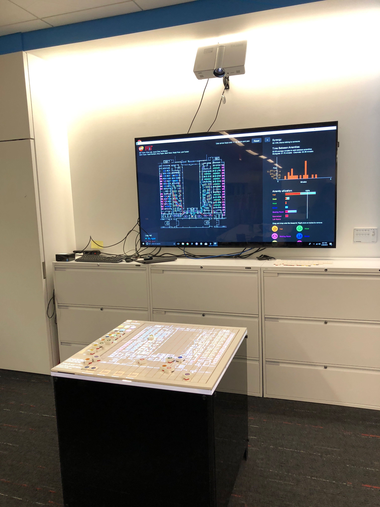
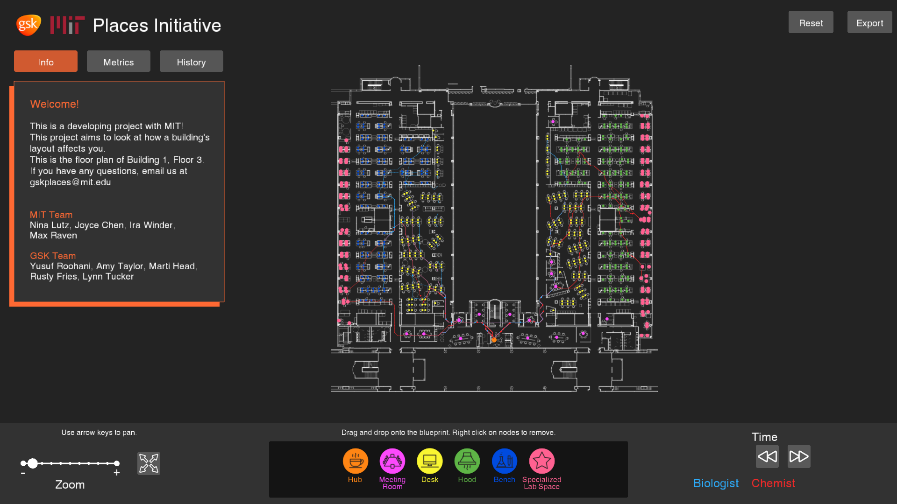
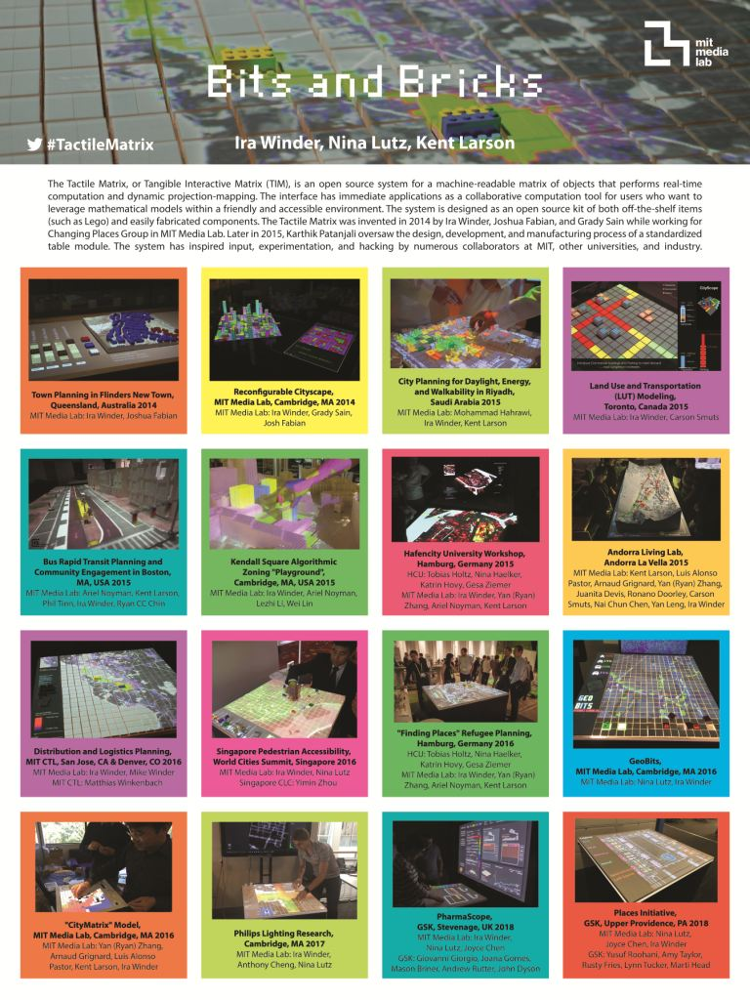

Research - City Science Group @ MIT Media Lab
June 2017 - Present
Places Initiative
I'm programming and designing the full UI and graphics of the tool that takes all of the keycard data of Biologists and Chemists within the building and simulates their movement and equipment usage. The following images show the evolution of the UI from the start of the project up until the last deployment in March. There is still more work to be done, but it is interesting to see how the bar bones functionality slowly becomes more refined! Currently, this project is deployed through a tangible interface in Philadelphia.    
IEEE Future Technologies Conference Poster
I designed the "Bits and Bricks" poster display for our IEEE Future Technologies Conference entry. We won Best Demo Award. I tried to embody the idea of colorful Lego bricks and projection mapping.
Manufacturing Initiative
I adopted a pharmaceutical manufacturing simulation to a web interface, programming full functionality, improving UI and graphics, and creating the interface design. This was a proof of concept of translating from an existing implementation written in Processing 2 to p5.js. I had never worked with those specific languages until this project and have documented the necessity for parallel development in future branches of the GSK project. Currently, this project is deployed through a tangible interface in England.
See version 1 of project at irawinder.github.io/PharmaDSS-js.

Member's Week Display
I designed the poster display for the GSK Places and Manufacturing projects. They were shown the stakeholders and companies invited to the Media Lab for Member's Week.

User Case Study
I have currently designed a user case study in order to assess the advantages and disadvantages of using a tactile matrix versus a standard graphical user interface in both a individual and a collaborative setting. The image below represents our hypothesis that the GUI may be more effective for an individual setting, but the tactile matrix will be more effective in a collaborative setting. I'm currently compling the results for the user case study, so stay tuned! We plan on expanding these user case studies to different types of users and for specifically the GSK project.